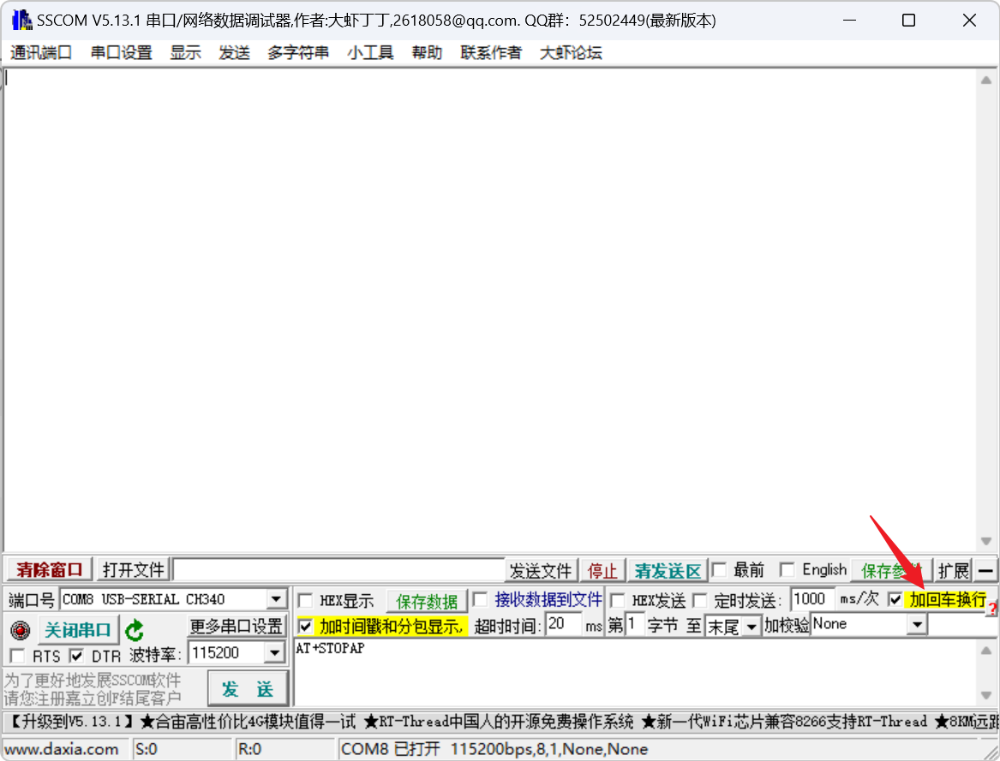

<!DOCTYPE lake>
<h2 data-lake-id="RFJru" id="RFJru"><span data-lake-id="uba1201e3" id="uba1201e3">学习目标</span></h2><ul list="u0d610a10"><li data-lake-id="u1878b2fe" fid="udcd7dd72" id="u1878b2fe"><span data-lake-id="u6270e760" id="u6270e760">理解AP和STA模式</span></li><li data-lake-id="u47001024" fid="udcd7dd72" id="u47001024"><span data-lake-id="u3bd8d794" id="u3bd8d794">掌握基本的AT指令</span></li><li data-lake-id="u5c2a0e05" fid="udcd7dd72" id="u5c2a0e05"><span data-lake-id="u3456d014" id="u3456d014">能够通过AT指令开启AP模式</span></li><li data-lake-id="u1b33ea43" fid="udcd7dd72" id="u1b33ea43"><span data-lake-id="u2513ac11" id="u2513ac11">能够通过AT指令开启STA模式</span></li><li data-lake-id="u81ba50e8" fid="udcd7dd72" id="u81ba50e8"><span data-lake-id="ueb3ca06d" id="ueb3ca06d">可以查阅文档</span></li></ul><h2 data-lake-id="aZnd2" id="aZnd2"><span data-lake-id="u62286457" id="u62286457">学习内容</span></h2><h3 data-lake-id="y5u3L" id="y5u3L"><span data-lake-id="u54c2bae3" id="u54c2bae3">AP模式</span></h3><p data-lake-id="uf634d6ff" id="uf634d6ff"><span data-lake-id="uac7f5955" id="uac7f5955">AP模式是指无线网络中的一种工作模式，全称为“Access Point Mode”（接入点模式）。</span></p><p data-lake-id="uf2e1ddb4" id="uf2e1ddb4"><span data-lake-id="u4ed9c758" id="u4ed9c758">AP模式是指将无线路由器或无线接入点配置为接收无线设备的连接，并为它们提供网络连接的模式。在AP模式下，无线路由器或无线接入点充当中心节点，其他设备（如智能手机、笔记本电脑、平板电脑等）可以通过无线信号连接到该设备，并通过它来访问互联网或局域网。</span></p><p data-lake-id="uffd52bee" id="uffd52bee"><span data-lake-id="u3fa915e3" id="u3fa915e3">AP模式通常用于建立无线局域网（WLAN）。通过在AP模式下设置无线路由器或无线接入点，可以在家庭、办公室或公共场所中提供无线网络连接。这种模式允许多个设备同时连接到无线网络，并共享网络资源，例如共享文件、打印机或互联网连接。</span></p><p data-lake-id="u04211272" id="u04211272"><span data-lake-id="u728e6a95" id="u728e6a95">简单理解，AP模式扮演的角色为路由器。</span></p><h3 data-lake-id="dvKPV" id="dvKPV"><span data-lake-id="uda342f1c" id="uda342f1c">STA模式</span></h3><p data-lake-id="u0a0f642f" id="u0a0f642f"><span data-lake-id="ufad7502f" id="ufad7502f">STA模式是指无线网络中的一种工作模式，全称为“Station Mode”（站点模式）。</span></p><p data-lake-id="u2de97ec8" id="u2de97ec8"><span data-lake-id="u85e9507f" id="u85e9507f">在无线网络中，STA模式是指将无线设备配置为客户端，用于连接到无线路由器或无线接入点以获取网络连接。在STA模式下，无线设备（如智能手机、笔记本电脑、平板电脑等）通过接收无线信号连接到无线路由器或无线接入点，并通过该设备访问互联网或局域网。</span></p><p data-lake-id="u10aca388" id="u10aca388"><span data-lake-id="u86e51e87" id="u86e51e87">STA模式允许无线设备作为客户端与无线网络进行通信，类似于电脑通过无线网卡连接到无线网络的方式。在STA模式下，无线设备可以使用无线信号连接到指定的无线网络，并获得该网络提供的网络服务和资源，例如互联网访问、文件共享等。</span></p><p data-lake-id="uf1cd7e77" id="uf1cd7e77"><span data-lake-id="ufb62835b" id="ufb62835b">简单理解，STA模式扮演的角色为需要联网的设备，如手机，笔记本电脑等。</span></p><h3 data-lake-id="LFzsA" id="LFzsA"><span data-lake-id="u1c4cc7a8" id="u1c4cc7a8">AT指令</span></h3><h4 data-lake-id="hDB9l" id="hDB9l"><span data-lake-id="u83a7595c" id="u83a7595c">工具</span></h4><p data-lake-id="u72bc435c" id="u72bc435c"><span data-lake-id="u17964912" id="u17964912">采用sscom进行串口命令调试，配置如图：</span></p><p data-lake-id="udc3abd5e" id="udc3abd5e"></p><ul list="u6d83d0ae"><li data-lake-id="u93c16a2d" fid="ub90a44a0" id="u93c16a2d"><span data-lake-id="u4667eda4" id="u4667eda4">AT命令执行，需要默认加回车换行</span></li></ul><h4 data-lake-id="pwQFn" id="pwQFn"><span data-lake-id="u0ce76ed3" id="u0ce76ed3">AP模式</span></h4><h5 data-lake-id="O3JXj" id="O3JXj"><span data-lake-id="u59c74c2f" id="u59c74c2f">启动AP模式</span></h5><span class="yuque-card-unsupported">[codeblock]</span><ul list="u6c7683b8"><li data-lake-id="u3ebe6a1c" fid="uffcedf99" id="u3ebe6a1c"><span data-lake-id="ua1ae97b5" id="ua1ae97b5">&lt;ssid&gt;:  即路由器名称，参数需使用双引号  </span></li><li data-lake-id="uc821b9a4" fid="uffcedf99" id="uc821b9a4"><span data-lake-id="ub3c0fe00" id="ub3c0fe00">&lt;ssid_hide&gt;：</span><span data-lake-id="ue2a001ec" id="ue2a001ec" style="color: rgba(0, 0, 0, 0.54)">0不隐藏，1隐藏</span></li><li data-lake-id="uc43b1ca7" fid="uffcedf99" id="uc43b1ca7"><span data-lake-id="u28405894" id="u28405894">&lt;chn&gt;：信道，1-14，默认写1即可</span></li><li data-lake-id="u9e962597" fid="uffcedf99" id="u9e962597"><span data-lake-id="ucb782db4" id="ucb782db4">&lt;auth_type&gt;：0(open)；2(WPA2_PSK)； 3(WPA_WPA2_PSK)； </span></li><li data-lake-id="u99c9939e" fid="uffcedf99" id="u99c9939e"><span data-lake-id="u491853d7" id="u491853d7">&lt;passwd&gt;： 密码，参数需使用双引号，密码长度为8位或以上  </span></li></ul><span class="yuque-card-unsupported">[codeblock]</span><h5 data-lake-id="e413W" id="e413W"><span data-lake-id="u4fd8cfc4" id="u4fd8cfc4">停止AP模式</span></h5><span class="yuque-card-unsupported">[codeblock]</span><h4 data-lake-id="eWJyX" id="eWJyX"><span data-lake-id="u5d91f432" id="u5d91f432">STA模式</span></h4><h5 data-lake-id="RCS9T" id="RCS9T"><span data-lake-id="u574649aa" id="u574649aa">启动STA模式</span></h5><span class="yuque-card-unsupported">[codeblock]</span><h5 data-lake-id="mcLLX" id="mcLLX"><span data-lake-id="u2d8d1a8f" id="u2d8d1a8f">扫描周边的网络</span></h5><span class="yuque-card-unsupported">[codeblock]</span><h5 data-lake-id="KGXQX" id="KGXQX"><span data-lake-id="u56e1dda1" id="u56e1dda1">查看扫描结果</span></h5><span class="yuque-card-unsupported">[codeblock]</span><h5 data-lake-id="r0dDr" id="r0dDr"><span data-lake-id="u5114519b" id="u5114519b">连接指定的WIFI</span></h5><span class="yuque-card-unsupported">[codeblock]</span><ul list="u9c00dbeb"><li data-lake-id="ub0eba4d6" fid="uca97c499" id="ub0eba4d6"><span data-lake-id="u264593d1" id="u264593d1">&lt;ssid&gt;：路由器名称，参数需使用双引号 </span></li><li data-lake-id="uab312bfd" fid="uca97c499" id="uab312bfd"><span data-lake-id="u3f94e79d" id="u3f94e79d">&lt;bssid&gt;：通常为路由器MAC地址 </span></li><li data-lake-id="u3d162987" fid="uca97c499" id="u3d162987"><span data-lake-id="u31989364" id="u31989364">&lt;auth_type&gt;：认证方式 。0(OPEN )，1(WEP)，2(WPA2_PSK)， 3(WPA_WPA2_PSK)</span></li><li data-lake-id="u23b57c72" fid="uca97c499" id="u23b57c72"><span data-lake-id="ueebdd6aa" id="ueebdd6aa">&lt;passwd&gt; ：密码，需使用双引号，如果对端网络认证方式为WEP，并 且密码为ASCLL格式，此处密码输入需要双层双引号</span></li></ul><span class="yuque-card-unsupported">[codeblock]</span><h5 data-lake-id="ytSdF" id="ytSdF"><span data-lake-id="u4f8695e6" id="u4f8695e6">查看连接状态</span></h5><span class="yuque-card-unsupported">[codeblock]</span><h5 data-lake-id="zoG1s" id="zoG1s"><span data-lake-id="ue53e5279" id="ue53e5279">请求DHCP分配地址</span></h5><span class="yuque-card-unsupported">[codeblock]</span><h5 data-lake-id="JzEHW" id="JzEHW"><span data-lake-id="u4722ddf2" id="u4722ddf2">查看当前IP</span></h5><span class="yuque-card-unsupported">[codeblock]</span><h5 data-lake-id="SXdYE" id="SXdYE"><span data-lake-id="u2ca701da" id="u2ca701da">测试网络连接</span></h5><span class="yuque-card-unsupported">[codeblock]</span><ul list="u86c264df"><li data-lake-id="u76ac3c7b" fid="ufd3ac8bc" id="u76ac3c7b"><span data-lake-id="u4a20afad" id="u4a20afad">&lt;url&gt;：网址</span></li></ul><span class="yuque-card-unsupported">[codeblock]</span><p data-lake-id="u54ded4fa" id="u54ded4fa"><br/></p><h2 data-lake-id="vlp8Y" id="vlp8Y"><span data-lake-id="u49c805e9" id="u49c805e9">练习题</span></h2><ol list="ue317b9e8"><li data-lake-id="u12d16729" fid="ue0a868e1" id="u12d16729"><span data-lake-id="ufc1481fa" id="ufc1481fa">通过命令启动AP模式</span></li><li data-lake-id="ude632c53" fid="ue0a868e1" id="ude632c53"><span data-lake-id="u289048c1" id="u289048c1">通过命令启动STA模式，并且联网测试</span></li></ol>